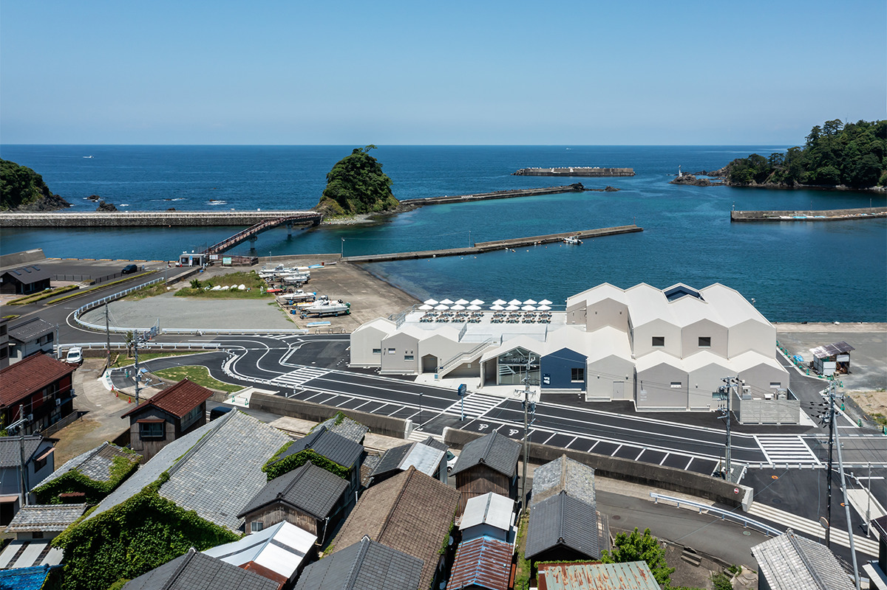
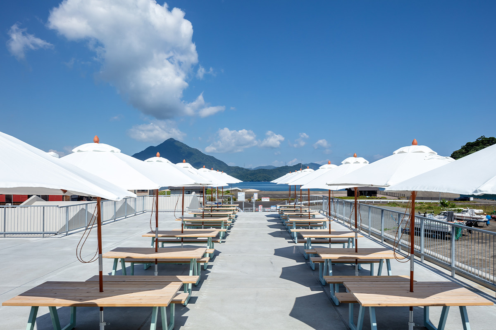
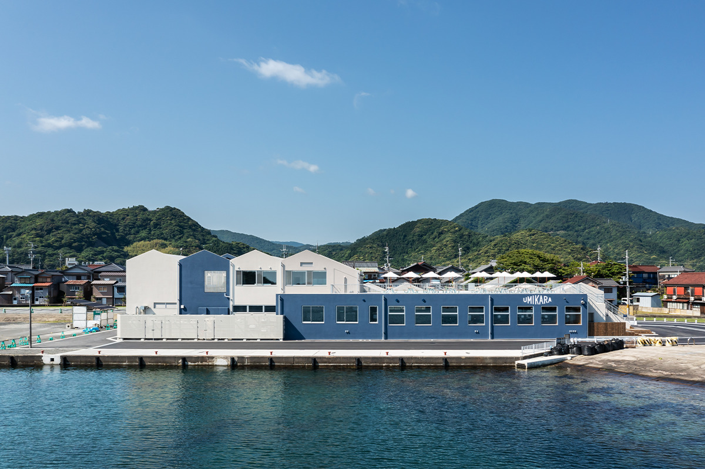
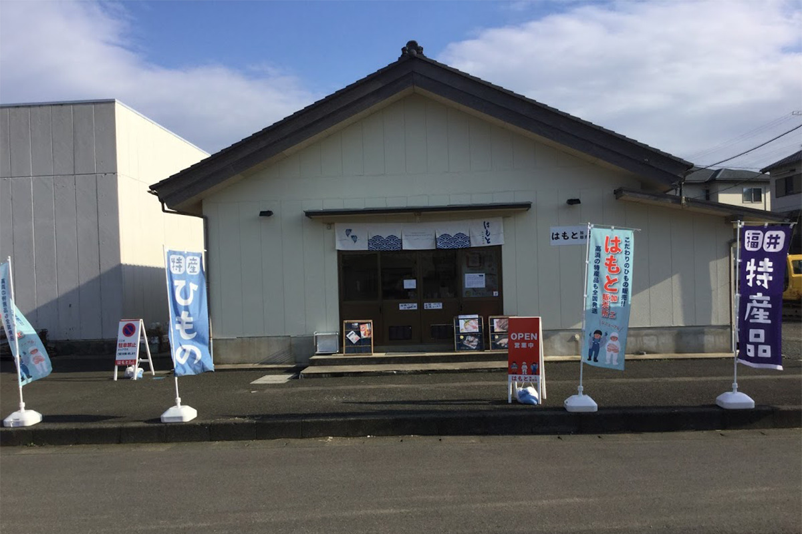
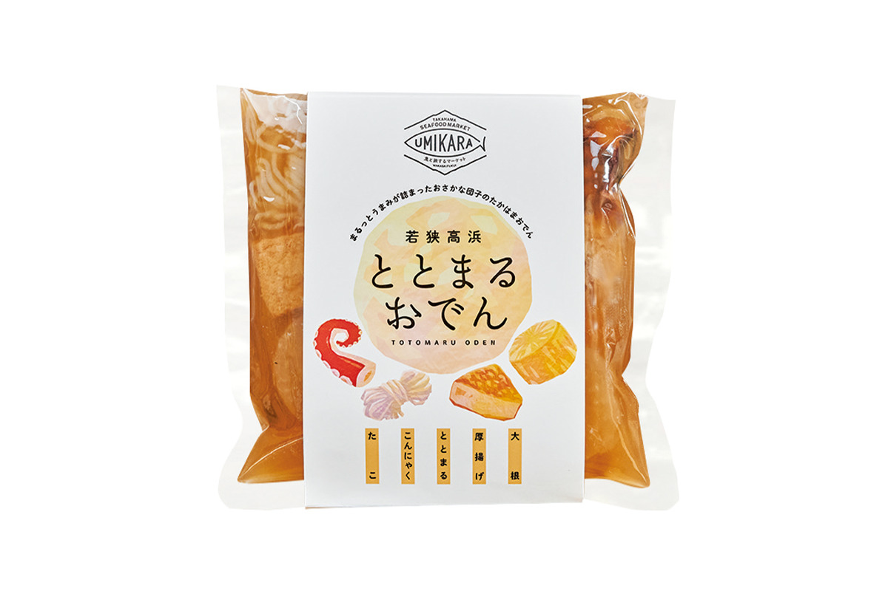
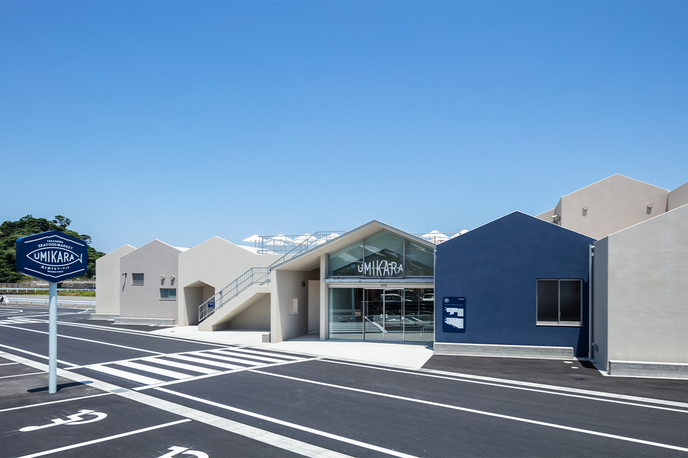
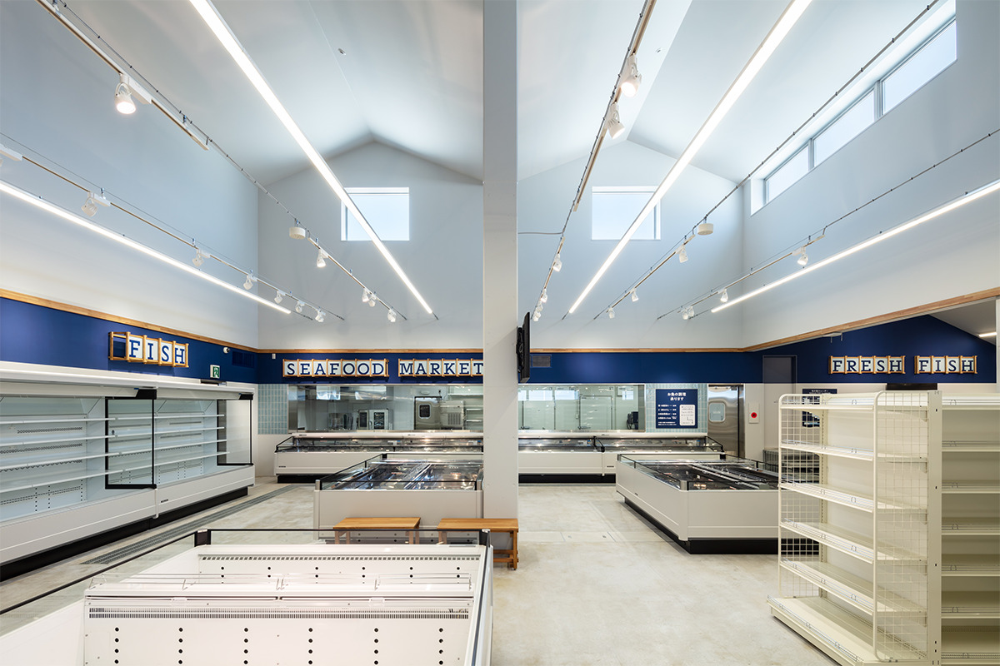
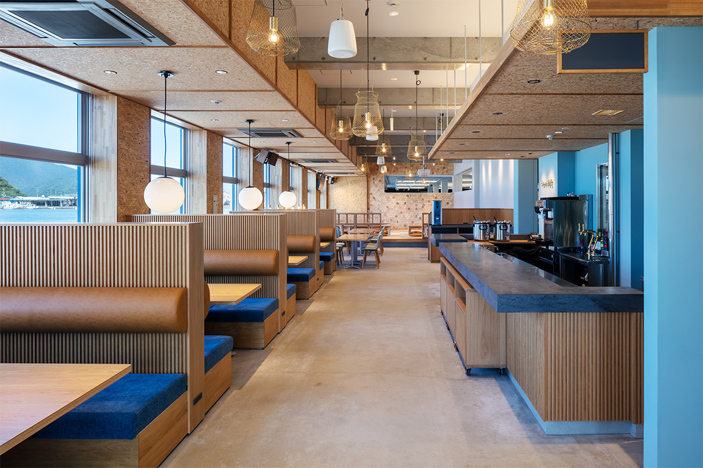
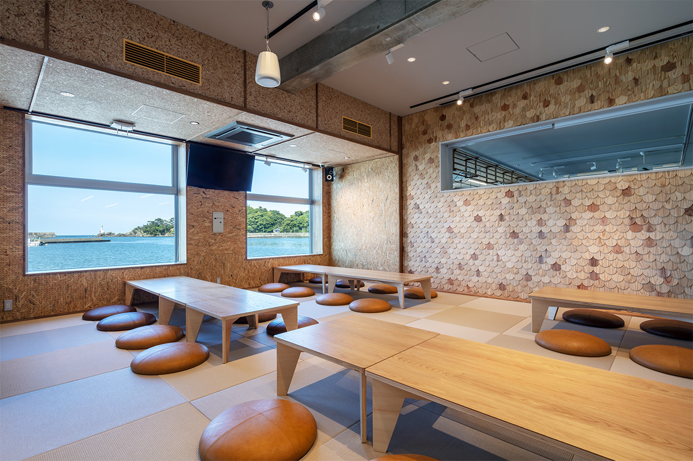

Префектура Фукуи · Такахама · еда
UMIKARA в Такахаме: рыбный рынок у самого причала, где рыбу выбирают из аквариума

Такахама на берегу залива Вакаса веками жила морем. В 2021 году у её рыболовного порта открылся UMIKARA, рынок, где рыбу можно купить у рыбаков, выбрать в аквариуме и тут же съесть, глядя на воду.
Город у моря
Новая жизнь рыбацкого городка
Такахама стоит на берегу залива Вакаса на западе префектуры Фукуи, и рыболовство кормило её с давних времён. Главное богатство городка, конечно, море. Речь не только о пляжах: здесь занимаются самыми разными морскими развлечениями, едят морепродукты с видом на воду и живут у самой кромки берега.

Летом 2021 года у рыболовного порта открылся UMIKARA, рынок, задуманный так, чтобы море и рыбацкий быт можно было почувствовать своими руками. Здесь продают местные морепродукты, работает столовая, где рыбу выбирают в аквариуме и её тут же готовят, и проходит дневной рынок, на котором улов покупают прямо у рыбаков.
Цель у этого места шире торговли. Городок хочет связать морем рыбаков, местных жителей и гостей, которые любят Такахаму, и сделать так, чтобы рыбацкий промысел мог жить дальше.
Зачем
Поднять цену рыбы
Когда-то Такахама была одним из известных курортов Японии, и рыболовство вместе с туризмом держало экономику городка. Со временем начались трудности. Молодёжь всё реже ест рыбу, и цены на неё упали; улов сокращается, портовые сооружения стареют, а сменить рыбаков некому.

Дешёвая рыба бьёт прежде всего по рыбакам. Если покупателей мало, молодые не идут в профессию, а без рыбаков нет и улова. Чтобы разорвать этот круг, нужен был понятный механизм, и в Такахаме решили начать с того, чтобы рыба снова стала цениться.
Кто стоит за рынком
Городская торговая компания
Этим занимается «Матикара», торговая компания самого городка. Её задача в том, чтобы продавать за пределами Такахамы всё, чем богат городок: промыслы, местные продукты и достопримечательности. Рядом с портом компания держит обновлённый цех переработки рыбы с лавкой.

В цеху ищут применение рыбе, которую раньше не использовали, и придумывают новые продукты. Многие не любят рыбу за кости и за то, что её трудно готовить, поэтому здесь стараются убрать эти неудобства и сделать продукты по-настоящему вкусными.

Как устроен
Поймать, сделать, продать, рассказать
UMIKARA работает вместе с «Матикарой» и рыбаками городка. Свою задачу здесь описывают четырьмя словами: поймать, сделать, продать, рассказать. Рыбаки получают выручку, покупатели заново открывают вкус рыбы, а промысел получает шанс выжить. Для гостей устраивают и «рыбацкий опыт», где можно попробовать себя в роли рыбака.

Под одной крышей здесь собраны рынок свежей рыбы, магазин сушёной рыбы и местных продуктов, которые удобно брать в подарок, и ресторан с видом на море. Терраса на крыше смотрит на гору Аоба и залив Вакаса. Здесь и вокруг здания регулярно стоят палатки с едой и проходят мастер-классы, так что место задумано и как точка встреч для жителей, и как витрина городка для гостей.
Что внутри
Пять частей одного рынка
Рынок
Рынок стоит вплотную к рыболовному порту, и рыбу здесь продают совсем свежей. Купленное можно сразу съесть в соседней столовой. На случай непогоды в зале стоят аквариумы с живой рыбой, чтобы прилавок не пустел, даже когда лодки не выходят в море.

UMIKARA select
Это светлое кафе и магазин у окон с видом на море. Здесь подают напитки и супы с местными томатами и травами, собственное крафтовое пиво. Товары магазина и соседнего винного отдела можно попробовать за отдельную плату.
Столовая «Умикара сёкудо»
Это просторный зал у моря, где совмещены зона для еды при магазине и обычная столовая. Для семей с детьми есть возвышение с татами. Днём столовая работает по самообслуживанию с билетным автоматом, вечером здесь обслуживают официанты.


UMIKARA TERRACE
Это открытая терраса, где можно перекусить с видом на море и гору Аоба. Летними вечерами она превращается в пивной сад с грилем, где жарят в основном морепродукты.
Дневной рынок
Это главное событие UMIKARA. Рынок проходит прямо у причала, и рыбу, которую только что выгрузили с лодок, можно купить из первых рук. Здесь ставной невод чувствуется ближе всего. Кроме рыбы продают еду из морепродуктов, которую едят на ходу, местные овощи и продукты.
UMIKARA задуман не просто как магазин с рыбой. Он должен приносить доход рыбакам, напоминать покупателям, как вкусна рыба, и помочь промыслу Такахамы возродиться и расти.
UMIKARA
- Адрес
- префектура Фукуи, уезд Ои, Такахама, Сиодо, 5-1
- Телефон
- +81 770-72-3528
- Сайт
- umikara.co.jp
Фото: Ёхэй Сасакура.